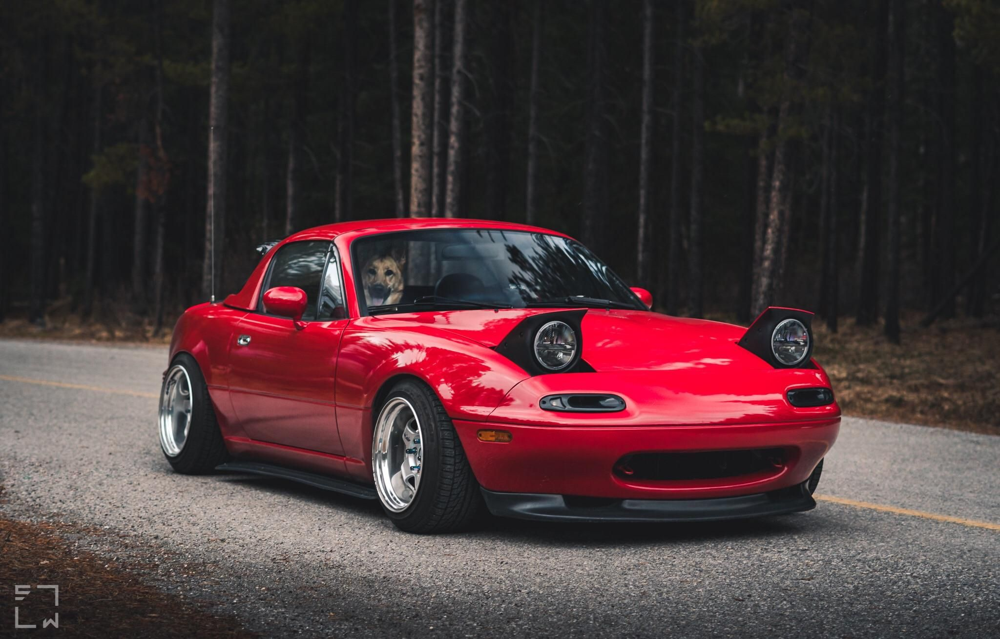
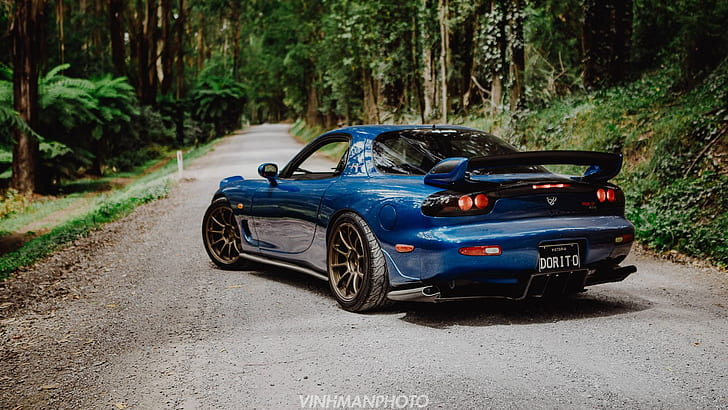
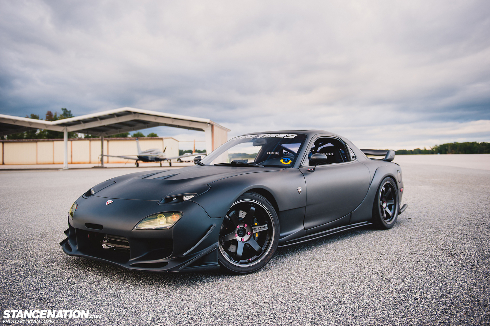
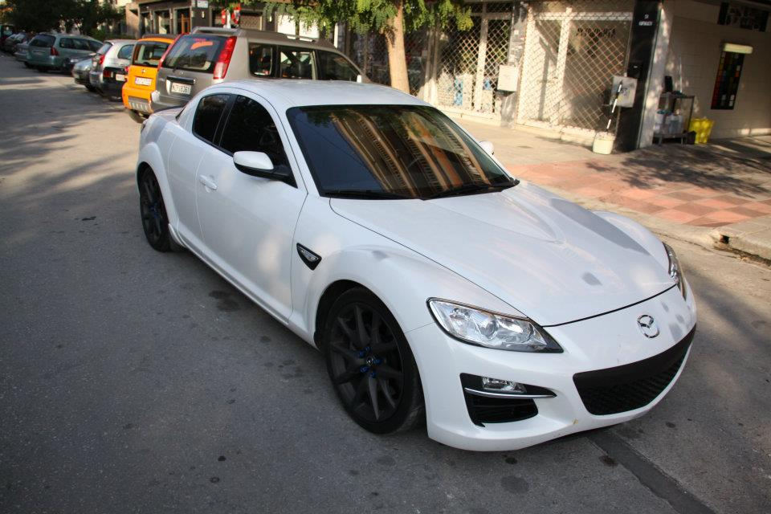

Mazda Miata
Mazda MX-5 / Miata — родстер, появившийся в 1989 году, выпускающийся компанией Mazda. Разработка велась совместно с инженерами компании Lotus Cars, в результате автомобиль унаследовал главные черты классических британских спортивных автомобилей (легкий вес, двигатель внутри колёсной базы, задний привод, простота конструкции).  Первое поколение было показано 10 февраля 1989 года на автосалоне в Чикаго, с ценой в США $14000. Начало производства: Май 1989 (США, Канада); 1 сентября 1989 года (Япония); 1990 год (Европа). Кузов NA был цельнометаллический стальной, капот алюминиевый. Весил он 980 кг. Коэффициент сопротивления был указан как 0,38. Подвеска была независимой, с рычагами на всех четырех колесах, со стабилизатором поперечной устойчивости спереди и сзади. MX-5 поставлялся с 1,6 литровым двигателем, мощностью 116 л.с, система питания — распределенный впрыск. Этот двигатель, под кодовым названием B6ZE(RS), был специально разработан для MX-5. Он имел облегченный коленвал, маховик и алюминиевый картер с ребрами охлаждения. Производство первого поколения закончилось в 1997 году.
Mazda RX-7
Mazda RX-7 — спортивный автомобиль, выпускавшийся японским автопроизводителем Mazda с 1978 по 2002 год. Оригинальная RX-7 оснащалась двухсекционным роторно-поршневым двигателем и имела переднюю среднемоторную, заднеприводную компоновку. RX-7 пришла на смену RX-3 (обе в Японии продавались под маркой Savanna), вытеснила все остальные роторные автомобили Mazda за исключением Cosmo.  Третье поколение (FD) было представлено в 1992 году. Единственный доступный двигатель (13B-REW) был первым серийным твин-турбо агрегатом, экспортировавшимся из Японии. Первая версия двигателя развивала 265 л. с. (для версии с АКПП — 255 л. с.). В 1996 году был проведён фейслифтинг, а мощность двигателя была доведена до 280 л. с. В 1999 году провели значительный фейслифтинг, и экспорт автомобиля был прекращён. Из-за этого в каталогах часто можно встретить некорректную информацию о том, что именно в 1999 году в Японии началось производство этого автомобиля. Вообще же, третье поколение модифицировалось 5 раз: в 1993, 1995, 1996, 1998 и 1999 годах. Помимо этого RX-7 имела несколько ограниченных выпусков. Например, в 1992 году была выпущена партия в 300 машин серии RZ. А в 1994 году была представлена модификация R-II, ограниченная выпуском 350 автомобилей. Чуть позже, в 1997 году, было выпущено 700 машин серии Type RB Bathurst X, имевшей, помимо прочих доработок, эксклюзивный красный кожаный салон. В 1997 году к тридцатилетию модели была представлена модификация RS-R, тоже имевшая определённый лимит на выпуск. В 2002 году компания Mazda представила последнюю ограниченную серию модели RX-7 Spirit R. Серия Spirit R представлена тремя модификациями. Type A — наиболее дорогая и мощная версия. Мощность мотора лимитирована японским законодательством и составляет 280 л. с. КПП механическая 5-ступенчатая. Количество мест — 2. Type B отличается от Type A наличием задних сидений. Type C имеет более скромный мотор мощностью 255 л. с. и 4-ступенчатую автоматическую трансмиссию. Все модификации Mazda RX-7 Spirit R имеют обшитое кожей рулевое колесо и рычаг КПП, электрические стеклоподъёмники, улучшенную отделку салона мягким пластиком, 17" легкосплавные колёсные диски BBS и окрашенные в красный цвет тормозные механизмы. 
Mazda RX-8
Mazda RX-8 — спортивный автомобиль производства японской компании Mazda, преемник модели RX-7. Четырёхместное заднеприводное спорт-купе с распашными дверями без стойки. Кажется, что в машине только две двери, но если открыть переднюю дверь, виден рычаг для открытия задней двери. RX-8 выпускалась в Японии с 2003 по 2012 год. Впервые его прототип (тогда ещё носивший название RX-Evolv) был продемонстрирован в Детройте в 2000 году. Затем, примерно год спустя, в Токио демонстрировалась уже пробная версия с роторным двигателем Renesis. 